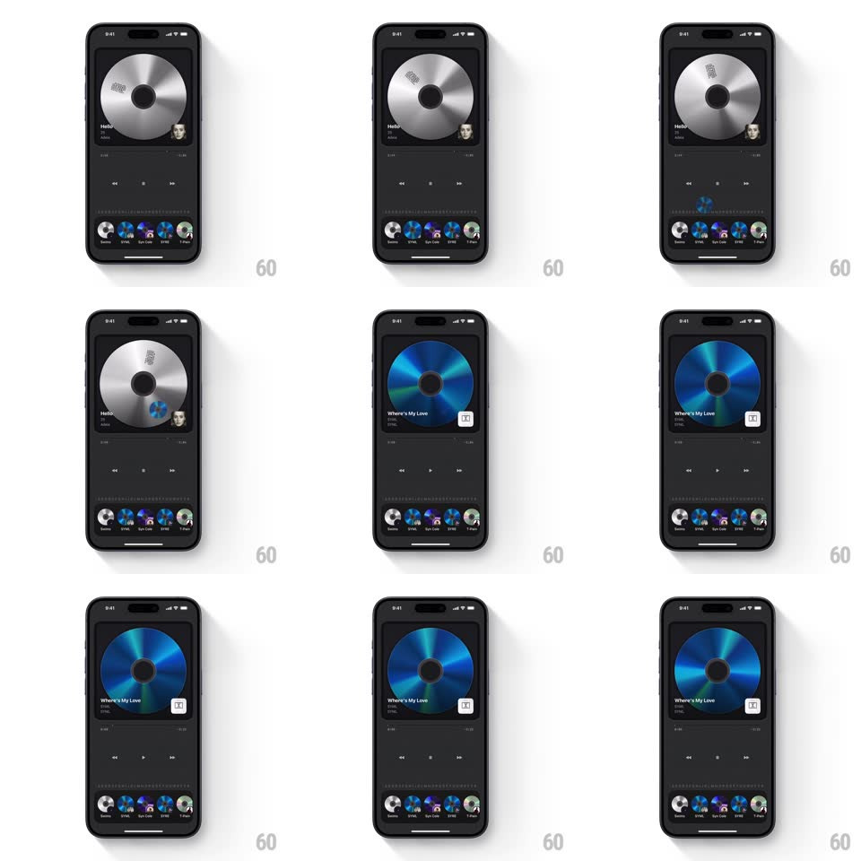

Media
Frame-by-frame

Rebuild this interaction 1:1: Droplay's album swap - dragging a different CD from the bottom carousel onto the already-playing platter shrinks the current disc out, flies the new CD up into the player window, and it expands, spins up, and takes over as now-playing ("Where's My Love") with updated title and progress.

Rebuild this interaction 1:1: Droplay's album swap - dragging a different CD from the bottom carousel onto the already-playing platter shrinks the current disc out, flies the new CD up into the player window, and it expands, spins up, and takes over as now-playing ("Where's My Love") with updated title and progress.
## Integration
Integration: stack-agnostic spec - springs given as stiffness/damping, timed motions as duration + curve; map every value to your framework and animation library of choice.
## Scene
Dark music player: a spinning silver CD in the player window ("Hello"), transport controls, and a curved carousel of small CD thumbnails at the bottom. After the swap, a blue iridescent CD occupies the window with the new track title.
## Motion spec
Pattern: drag-to-swap with outgoing/incoming platter exchange.
- Drag: the candidate CD lifts from the carousel (scale to 1.2x, tilt toward drag) and follows the finger; hovering over the player window highlights it with a soft ring (150ms).
- Drop: the current platter shrinks to a point and out (scale 1 -> 0, 300ms, ease-in) as the new CD arcs into the window center (~450ms, ease-out), expanding to full size.
- Landing: soft bounce (spring ~420/30, 250ms), spin-up to playback speed (~800ms linear ramp), and the title/artist/progress crossfade to the new track (250ms).
- The displaced CD returns to the carousel, sliding into the vacated slot (spring ~360/24).
## Calibration
- Outgoing shrink and incoming flight overlap slightly (~100ms) so the window never sits empty.
- The new disc's artwork tint (blue iridescence) sweeps in with its spin - the surface catches light as it turns.
## Reduced motion
Crossfade between platters (250ms); no flight, no spin-up.
## Don't miss
- The carousel keeps its order - the old CD takes the new one's slot, no reordering.
- Playback controls never disappear during the swap.